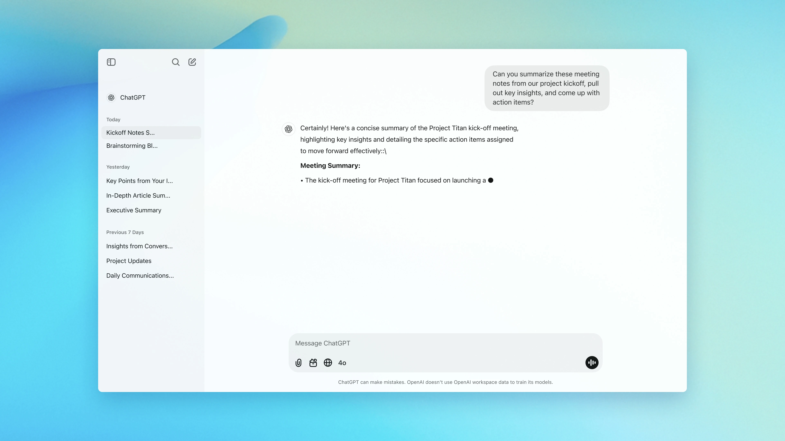

¿Qué es ChatGPT?
ChatGPT es un modelo de lenguaje desarrollado por OpenAI, basado en la arquitectura GPT (Generative Pre-trained Transformer). Está diseñado para generar texto coherente, responder preguntas y mantener conversaciones humanas naturales.
Galería
